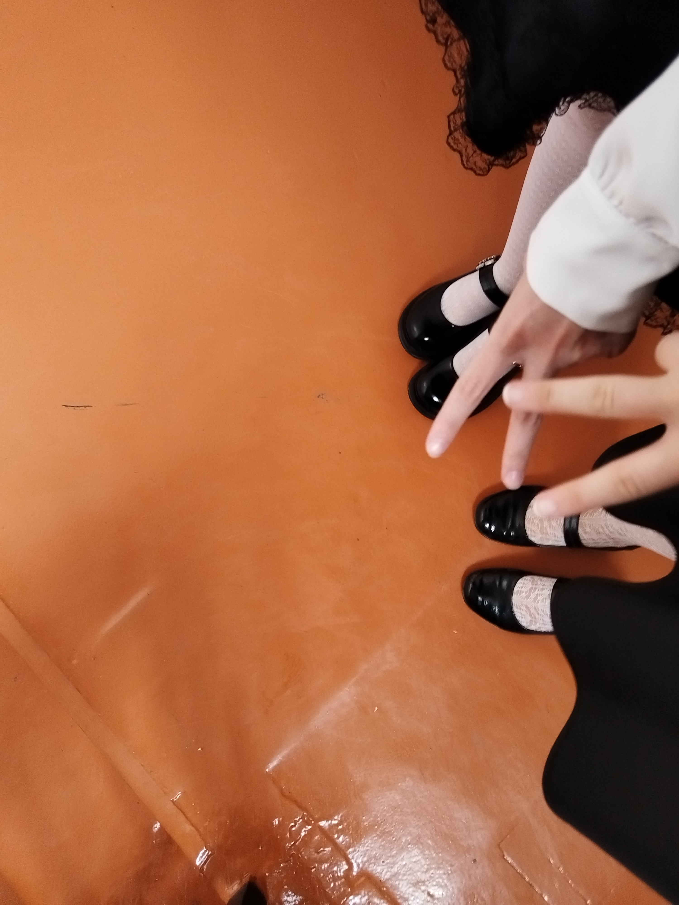i didnt rlly code this page myself cuz im not that cool yet but whatever here are honorable pictures with historical value
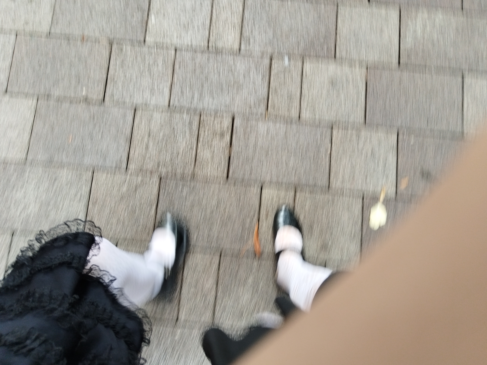
no1 lolitas
 that jeff the killer dress up game. your design in the end
that jeff the killer dress up game. your design in the end
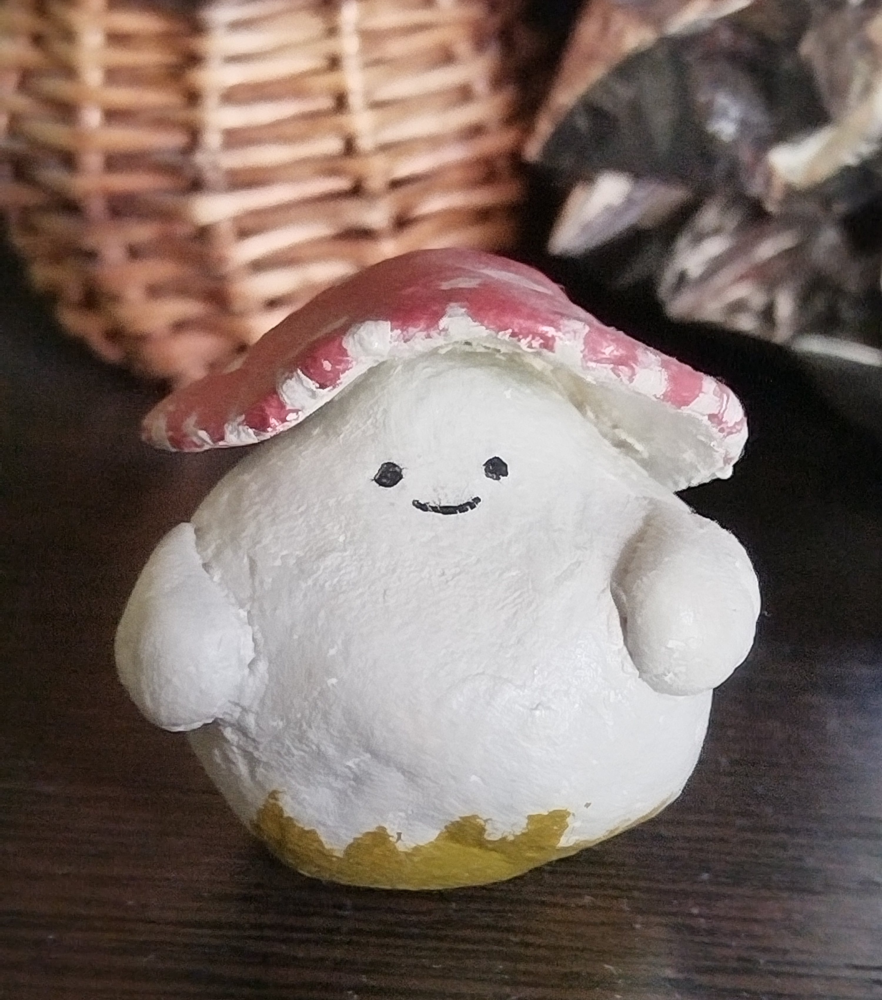
billy but he isnt bald yet
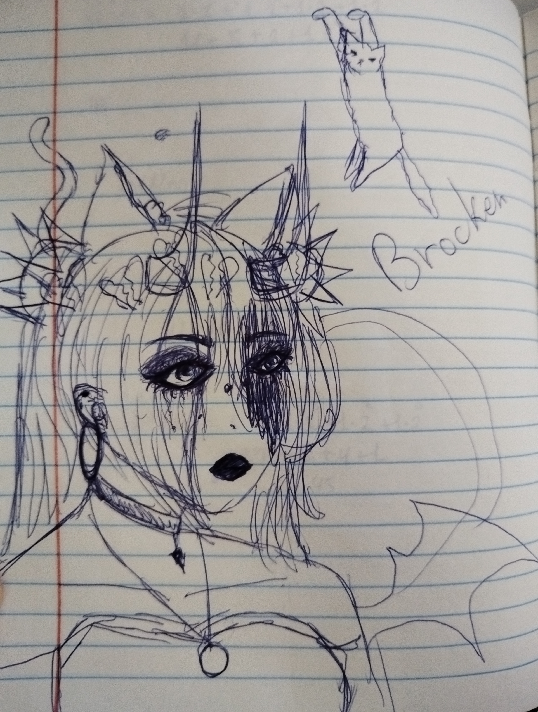you as a depressed gacha character
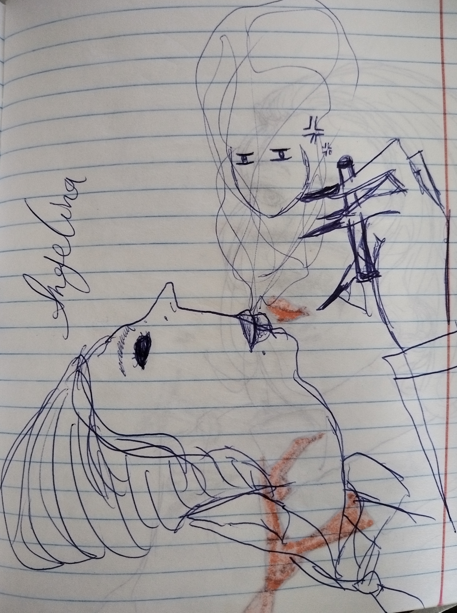
you smoking and getting possessed
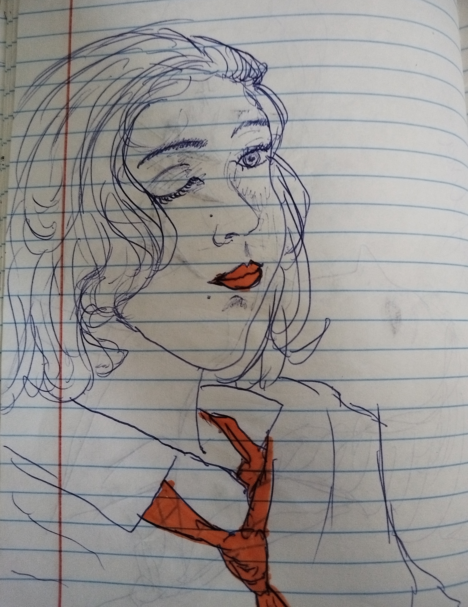you normally but idk where the orange makeup came from
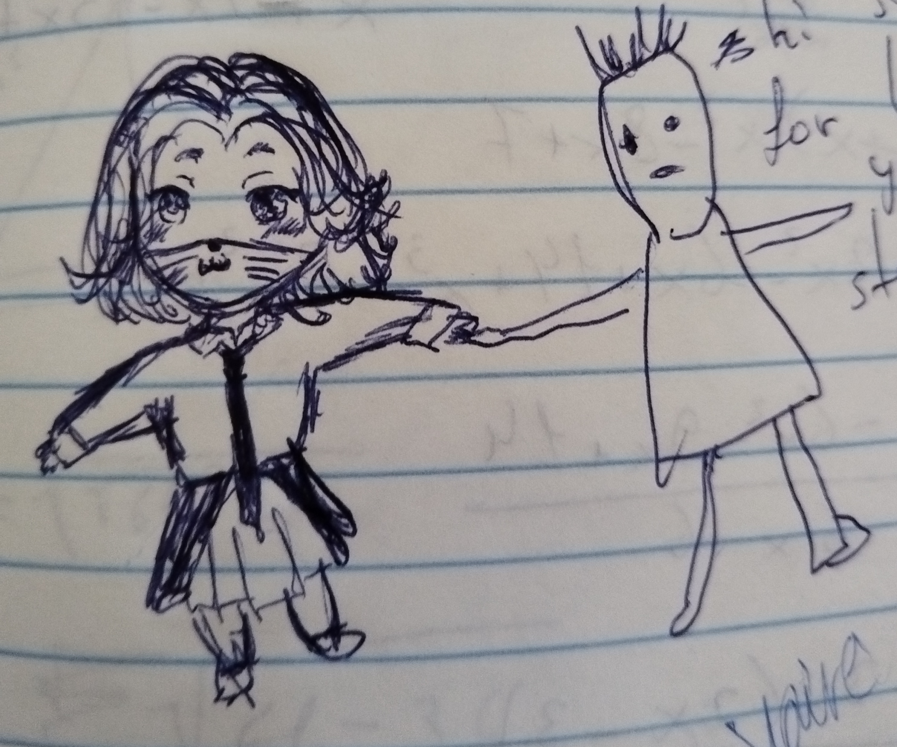
dwarf you and hamood
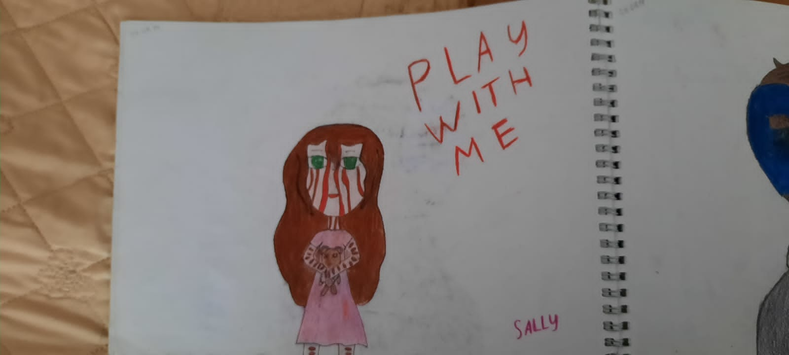
YOUR CREEPYPASTA DRAWINGS
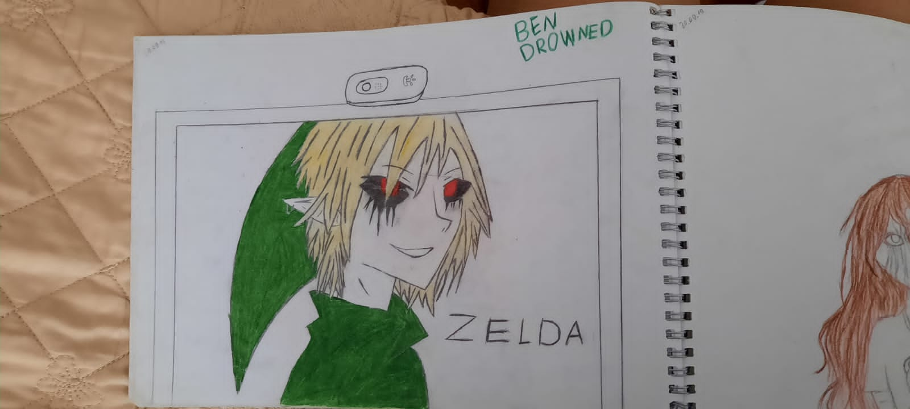
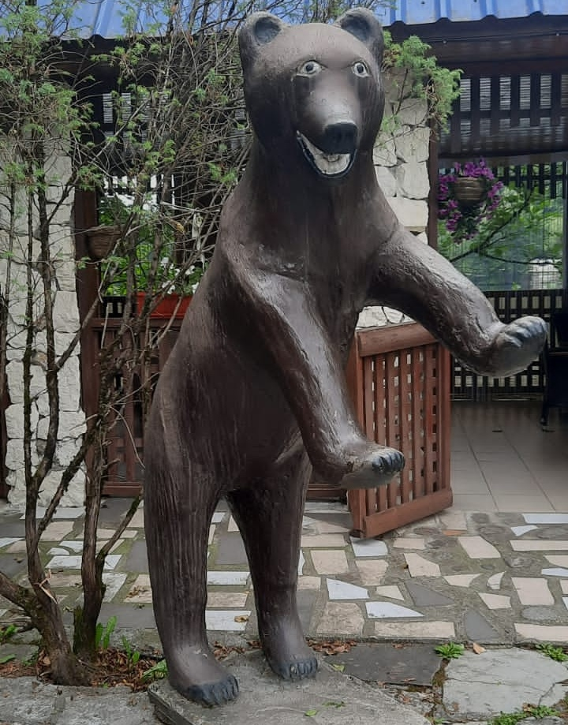your best friend screaming bear
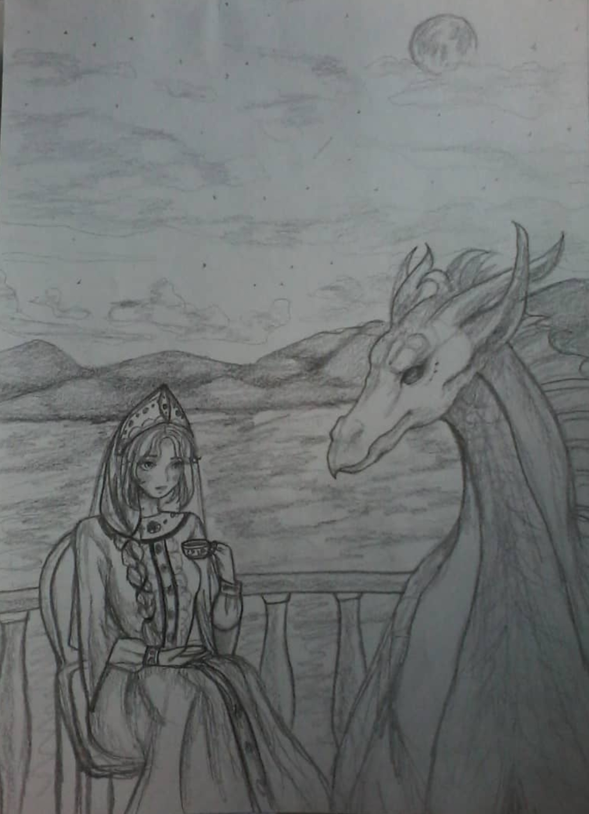
elena and dragon having tea in the story